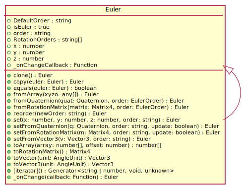

Class Euler
Hierarchy-Diagram
{kind=link}
Legend
 class
class
Hierarchy
- Euler
- Euler
Index
Constructors
Properties
Accessors
Methods
Constructors
constructor
- new
Euler(x?: number, y?: number, z?: number, order?: EulerOrder, unit?: AngleUnit): Euler -
Parameters
-
Optionalx: number -
Optionaly: number -
Optionalz: number -
Optionalorder: EulerOrder -
Optionalunit: AngleUnit
Returns Euler
-
Properties
_on
_on
Type declaration
-
- (): void
-
Returns void
Readonly is
is
order
order: string
Default
THREE.Euler.DefaultOrder
x
x: number
y
y: number
z
z: number
Static Default
Default
Static Rotation
Rotation
Accessors
pitch
- get pitch(): number
-
Get pitch in degrees
Returns
Pitch in degrees
Returns number
roll
- get roll(): number
-
Get roll in degrees
Returns
Roll in degrees
Returns number
yaw
- get yaw(): number
-
Get yaw in degrees
Returns
Yaw in degrees
Returns number
Methods
[iterator]
_on
clone
copy
equals
from
reorder
set
set
set
set
to
to
to
to
Static from
- from
Quaternion(quat: Quaternion, order??: EulerOrder): Euler -
Convert quaternion to euler
Returns
Euler instance
Parameters
-
quat: Quaternion
Quaternion
-
Optionalorder: EulerOrder = 'XYZ'Euler order
Returns Euler
-
Static from
- from
Rotation Matrix(matrix: Matrix4, order??: EulerOrder): Euler -
Convert rotation matrix to euler
Returns
Euler instance
Parameters
-
matrix: Matrix4
Rotation matrix
-
Optionalorder: EulerOrder = 'XYZ'Euler order
Returns Euler
-
Serializable THREE.js Euler